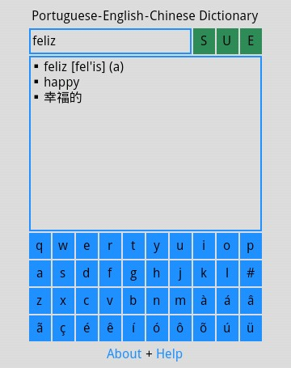

Portuguese-English-Chinese Dictionary | 葡英汉词典

Portuguese-English-Chinese Dictionary (PECD) is a minimalistic trilingual dictionary for Android, Babylon and all desktop OS. You can enter a Portuguese word to search for equivalent Chinese word(s), and vice versa.
葡英汉词典（PECD）是一个极简主义风格的三语词典，有安卓版、巴比伦版和网页版。输入一个葡语单词，可以查询对应的汉语单词，或者相反。